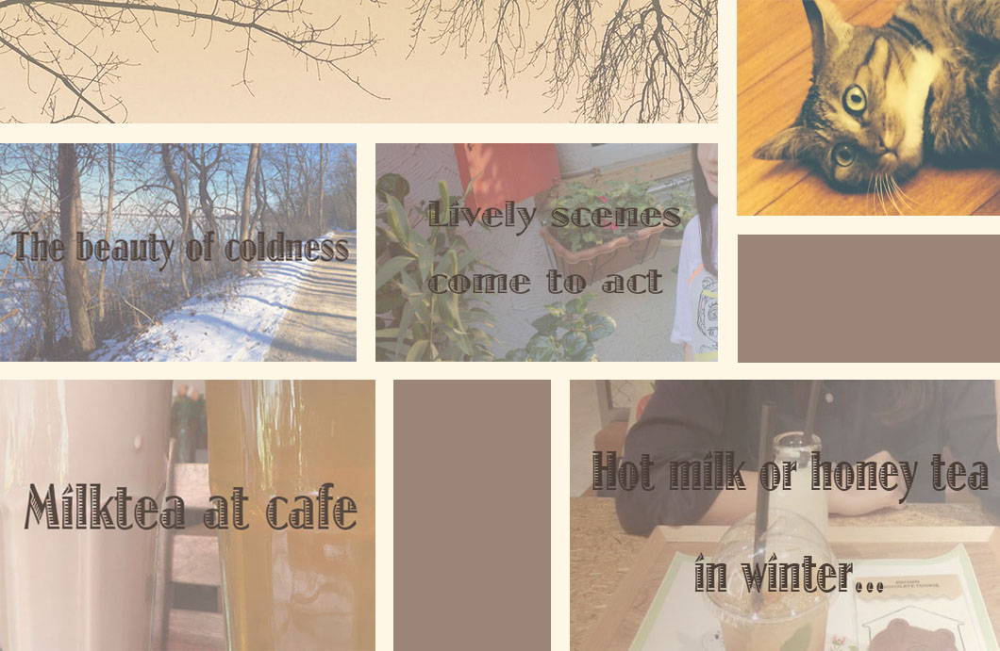

Passion for Food
Stories...
I enjoy taking journals for food that impresses me. Food tells stories and can represent many aspects of life and journeys.
As a registered gourmet, I sometimes get invited by local TV radio to talk about my experience and respond to audience.
Not limited to American and Chinese food, I have travelled to various countries for tasting different foods and experiencing interesting cultures, including Indonesia, the United Kingdom, Russia, Australia, Canada, Japan, India, etc. They seldom share features in food, which is the most meaningful reason for one to take a travel of food.
Most of these journeys were parts of my former work, taking tours to collect content for TV programs, writing comments on restaurants at different spots around the world, composing lyrics involving different cultures and languages. I indeed have learned a lot from those amazing trips.
Passion for Music
Sentiments...
I have learned music compositions for 10 years. It is my favorite way of expressing feelings and transferring meanings. I usually compose songs with the help of piano and guitar. I am thinking of leaning one more instrument, which may help add some spice to my music creation.
I have been composing Christmas songs recently for our Christmas event, Music Out at Christmas Eve, a musical festival that will be hosted in the Downtown Concert Hall (322 Downtown Street, Brooklyn, NY). Come join us and have fun on December 22, 2016! 15 dollars per person and free admission for studio members!
